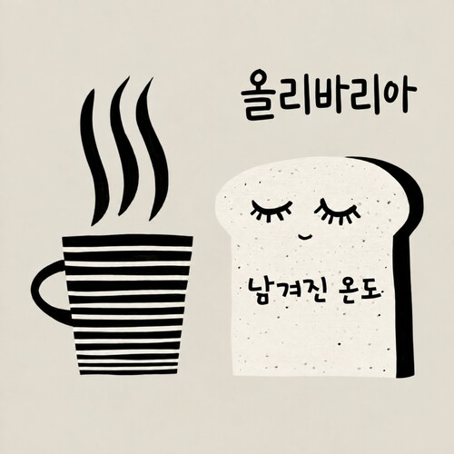
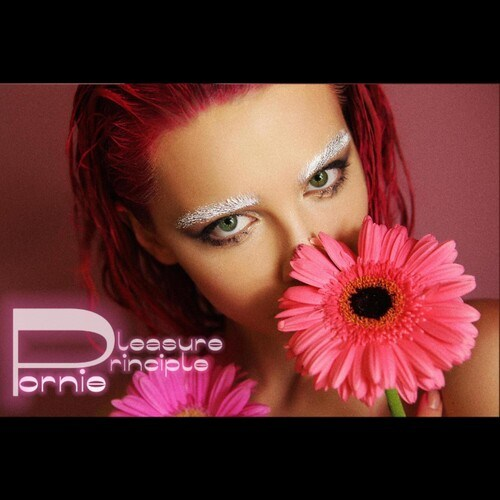

Side B · KnockOn AI Studio · 2026KnockOn
Release
Lab
Release
Lab
노크온 릴랩 아카이브
AI로 만든 음악도, 직접 만든 음악도!
노크온 릴랩은 아티스트 기획부터 음원 제작, 유통, 홍보, 저작권 관리, 수익 정산까지
직접 경험하는 6개월 실전 발매 프로젝트입니다.
혼자서는 막막한 발매 과정도 음악 동료들과 경험을 나누며 함께할 수 있습니다.
Season 2 · Open Call
노크온 릴랩 2기 모집 종료 · 3기는 2027년 7월 모집, 8월 시작 예정입니다.
옆으로 넘겨 보세요 · 7장
Season 1릴랩 시즌 1 · 2026 · 5 Releases
 Season 1 · 01 · Single류일한 · 믿어 의심치 않아2026.10.07
MelonGenieBugsFLOVIBESpotifyApple MusicYouTube MusicYouTube
Season 1 · 01 · Single류일한 · 믿어 의심치 않아2026.10.07
MelonGenieBugsFLOVIBESpotifyApple MusicYouTube MusicYouTube
 Season 1 · 02 · EPjasmino · 10월 31일의 겨울2026.10.22
MelonGenieBugsFLOVIBESpotifyApple MusicYouTube MusicYouTube
Season 1 · 02 · EPjasmino · 10월 31일의 겨울2026.10.22
MelonGenieBugsFLOVIBESpotifyApple MusicYouTube MusicYouTube
 Season 1 · 03 · EPAIVEN SHIN · 첫눈에 들어온 사람2026.10.20
MelonGenieBugsFLOVIBESpotifyApple MusicYouTube MusicYouTube
Season 1 · 03 · EPAIVEN SHIN · 첫눈에 들어온 사람2026.10.20
MelonGenieBugsFLOVIBESpotifyApple MusicYouTube MusicYouTube

Season 1 · 04 · Single올리바리아 · 남겨진 온도2026.10.20 MelonGenieBugsFLOVIBESpotifyApple MusicYouTube MusicYouTube
Season 1 · 05 · LPpornie · Pleasure Principle2026.11.01 MelonGenieBugsFLOVIBESpotifyYouTube MusicYouTubeLittlyPress